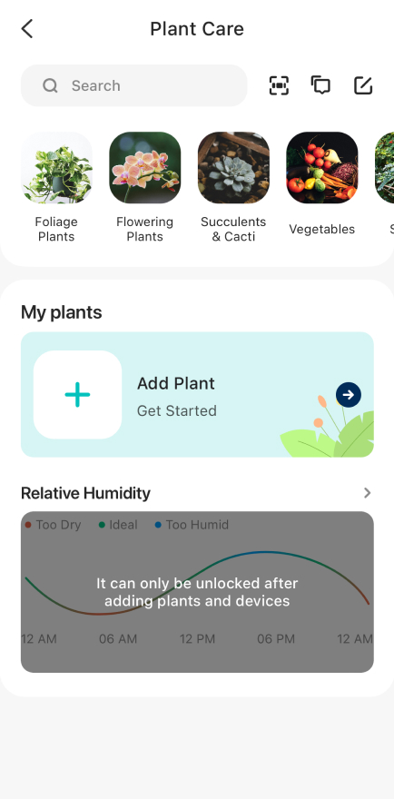
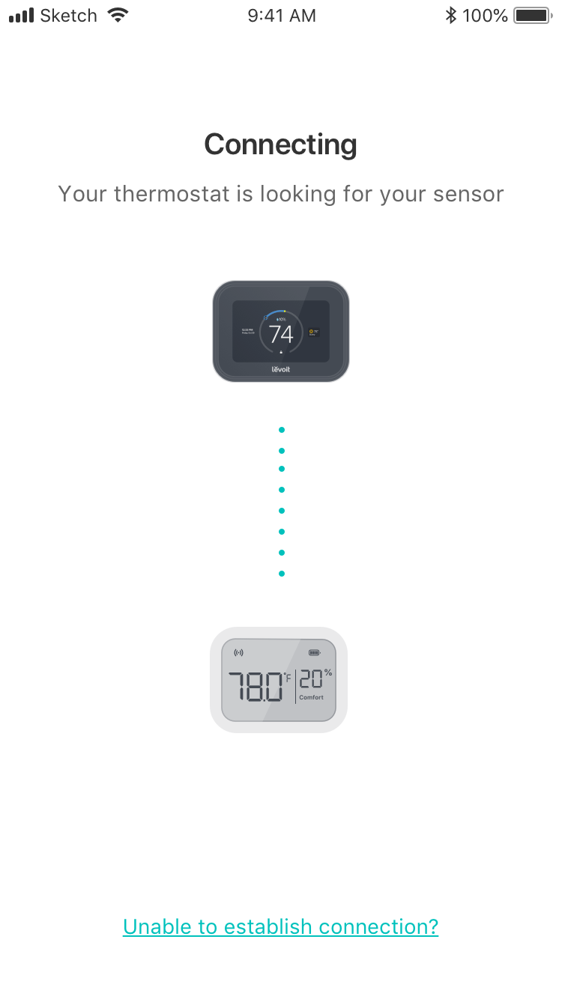
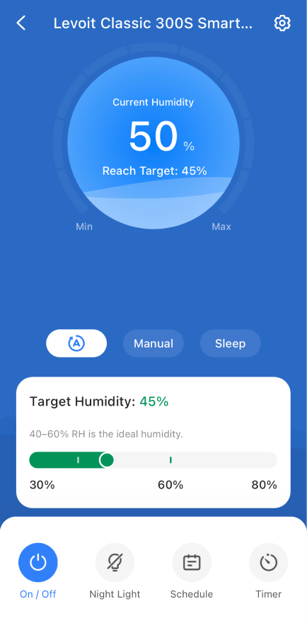
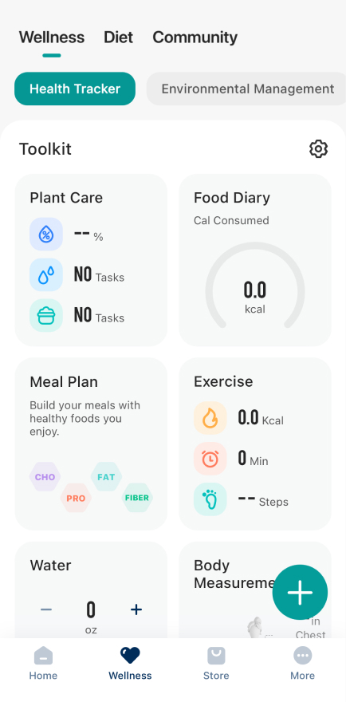

37%
PRODUCT MARKETING
Building the Levoit Humidifier Ecosystem
VeSync · Product Marketer
Market context
People who already own smart appliances want more from them.
In the U.S., smart appliance owners show stronger interest in remote monitoring, savings, and an eco-friendly home—making them a natural audience for a connected humidifier and sensor.
41%
Say smart appliances can help save money
41%
Say an environmentally friendly home is important
Source: Statista Consumer Insights, U.S., June 2023, p. 19.
Product opportunity
01 · Know the room
- Pain point
- The humidifier only knew the air around itself, not the far corner of the room.
- Solution
- An external sensor, with current humidity shown in the app.
02 · Manage comfort
- Pain point
- Keeping humidity comfortable meant adjusting the humidifier by hand.
- Solution
- Humidity targets, Auto mode, and schedules.
03 · Care for plants
- Pain point
- Plant owners didn’t know what humidity and temperature their plants needed.
- Solution
- Plant identification, care tips, and relative humidity.
04 · Connect devices
- Pain point
- Each device had its own routine and no shared view.
- Solution
- Sensor-linked humidifier control in VeSync.
Inside VeSync
In VeSync, the humidifier shows what the sensor reads and lets you control it. Plant Care turns that reading into advice for each plant.
Sensor reading → VeSync app → Humidifier controls

Plant Care
Add a plant and follow its relative humidity.
- Plant identification
- Care tips
- Relative humidity

Sensor pairing
The Aura thermostat finds its sensor.

Humidity control
Set a target. Choose Auto, Manual, or Sleep.

Wellness
Plant Care lives in the Wellness toolkit.
Result
Users took to it, and it gave the next launch a head start.
Users responded
Reviews and community posts showed people enjoying the new features and already using them. VeSync downloads on the App Store and Google Play rose significantly after launch.
From one feature to the whole line
What began as a sensor and a few app features grew, together with R&D, into an experience across the full humidifier line.
Traffic for the next launch
The humidifier already had the attention. A bundle offer and a landing page sent that traffic to the new sensor and thermostat, helping them launch.